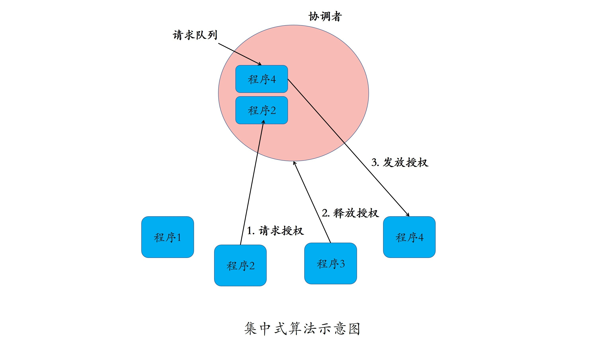
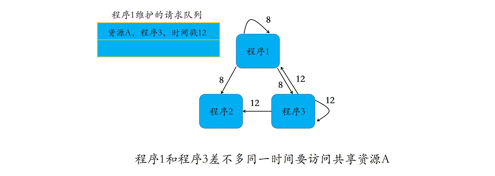
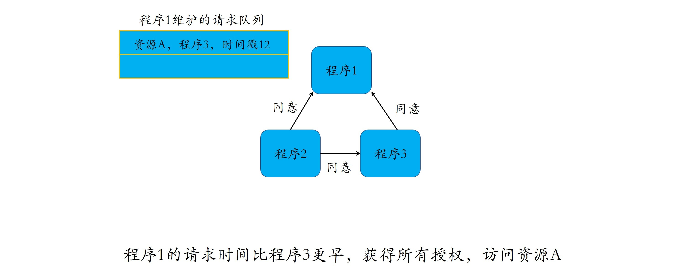
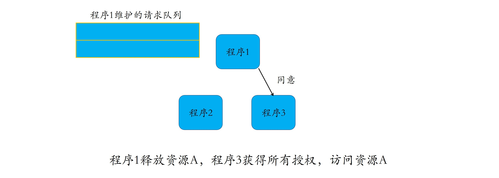
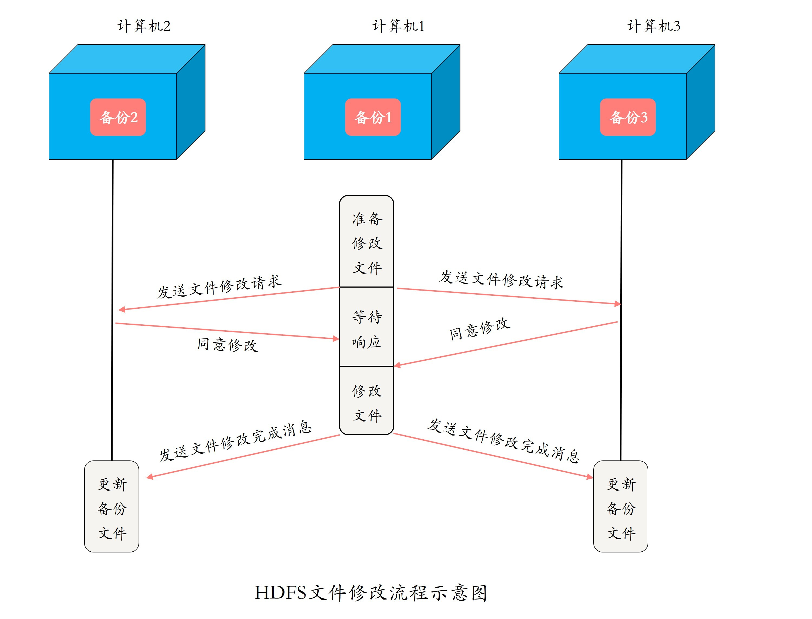
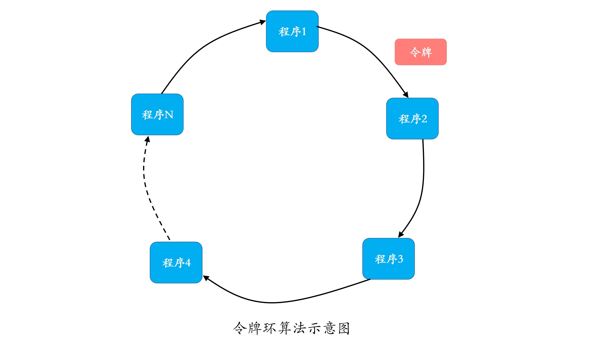
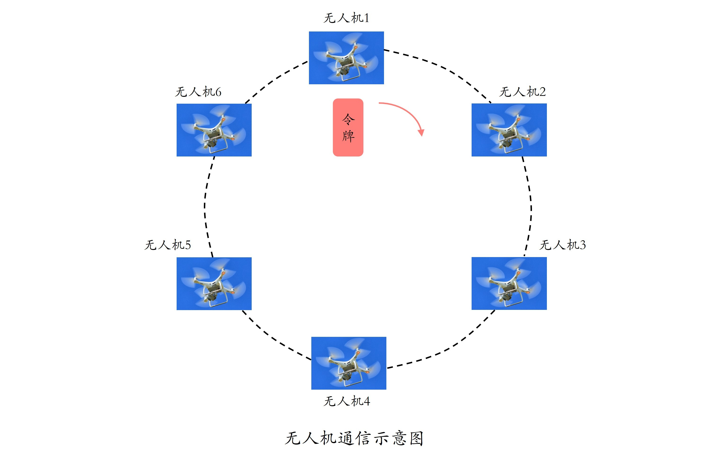
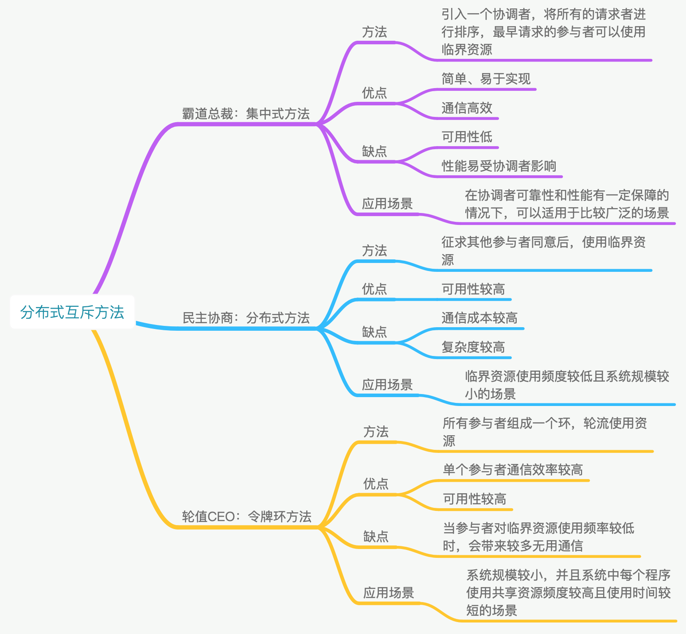

- 00 开篇词 四纵四横，带你透彻理解分布式技术.md
- 01 分布式缘何而起：从单兵，到游击队，到集团军.md
- 02 分布式系统的指标：啥是分布式的三围.md
- 03 分布式互斥：有你没我，有我没你.md
- 04 分布式选举：国不可一日无君.md
- 05 分布式共识：存异求同.md
- 06 分布式事务：All or nothing.md
- 07 分布式锁：关键重地，非请勿入.md
- 08 分布式技术是如何引爆人工智能的？.md
- 09 分布式体系结构之集中式结构：一人在上，万人在下.md
- 10 分布式体系结构之非集中式结构：众生平等.md
- 11 分布式调度架构之单体调度：物质文明、精神文明一手抓.md
- 12 分布式调度架构之两层调度：物质文明、精神文明两手抓.md
- 13 分布式调度架构之共享状态调度：物质文明、精神文明多手协商抓.md
- 14 答疑篇：分布式事务与分布式锁相关问题.md
- 15 分布式计算模式之MR：一门同流合污的艺术.md
- 16 分布式计算模式之Stream：一门背锅的艺术.md
- 17 分布式计算模式之Actor：一门甩锅的艺术.md
- 18 分布式计算模式之流水线：你方唱罢我登场.md
- 19 分布式通信之远程调用：我是你的千里眼.md
- 20 分布式通信之发布订阅：送货上门.md
- 21 分布式通信之消息队列：货物自取.md
- 22 答疑篇：分布式体系架构与分布式计算相关问题.md
- 23 CAP理论：这顶帽子我不想要.md
- 24 分布式数据存储系统之三要素：顾客、导购与货架.md
- 25 数据分布方式之哈希与一致性哈希：“掐指一算”与“掐指两算”的事.md
- 26 分布式数据复制技术：分身有术.md
- 27 分布式数据之缓存技术：“身手钥钱”随身带.md
- 28 分布式高可靠之负载均衡：不患寡，而患不均.md
- 29 分布式高可靠之流量控制：大禹治水，在疏不在堵.md
- 30 分布式高可用之故障隔离：当断不断，反受其乱.md
- 31 分布式高可用之故障恢复：知错能改，善莫大焉.md
- 32 答疑篇：如何判断并解决网络分区问题？.md
- 33 知识串联：以购买火车票的流程串联分布式核心技术.md
- 34 搭建一个分布式实验环境：纸上得来终觉浅，绝知此事要躬行.md
- 特别放送 Jackey：寄语天涯客，轻寒底用愁.md
- 特别放送 分布式下的一致性杂谈.md
- 特别放送 崔新：追根溯源，拨开云雾见青天.md
- 特别放送 徐志强：学习这件事儿，不到长城非好汉.md
- 特别放送 那些你不能错过的分布式系统论文.md
- 结束语 为什么说提升职业竞争力要从尊重、诚实开始？.md
03 分布式互斥：有你没我，有我没你
你好！我是聂鹏程。今天，我来继续带你打卡分布式核心技术。
通过前面的两篇文章，相信你已经对此次的分布式世界之行有了一个初步了解，想必对此次旅行也是充满期待。今天，我就带你正式踏上第一站：分布式协调与同步。在这一站，我将带你学习如何让分布在不同计算机上的程序具有“团队精神”，换句话说就是如何让程序通过协作共同去达成一个业务目标。
在本站，我将带你打卡的第一个景点是分布式互斥。那，什么是分布式互斥呢？
什么是分布式互斥？
想象一下，你正在一家餐厅使用自助咖啡机泡制咖啡，突然有个人过来挪走了你的杯子，开始泡制他自己的咖啡。你耐着性子等他操作完，继续泡制自己的咖啡。结果你开始没多久，他又回来中断了你泡制咖啡的过程。相信要不了几个回合，你和他就会上演一场“有你没我，有我没你”的格斗了。
这样现实的问题也同样存在于分布式世界。就像我们使用自助咖啡机时不希望被打扰一样，对于同一共享资源，一个程序正在使用的时候也不希望被其他程序打扰。这，就要求同一时刻只能有一个程序能够访问这种资源。
在分布式系统里，这种排他性的资源访问方式，叫作分布式互斥（Distributed Mutual Exclusion），而这种被互斥访问的共享资源就叫作临界资源（Critical Resource）。
接下来，我带你一起看看如何才能让分布式系统里的程序互斥地访问临界资源。
霸道总裁：集中式算法
对于前面提到的咖啡机问题，我们首先想到的就是，增加一个“协调者”来约束大家使用自助咖啡机，解决强行插入打断别人的问题。
类似的，我们引入一个协调者程序，得到一个分布式互斥算法。每个程序在需要访问临界资源时，先给协调者发送一个请求。如果当前没有程序使用这个资源，协调者直接授权请求程序访问；否则，按照先来后到的顺序为请求程序“排一个号”。如果有程序使用完资源，则通知协调者，协调者从“排号”的队列里取出排在最前面的请求，并给它发送授权消息。拿到授权消息的程序，可以直接去访问临界资源。
这个互斥算法，就是我们所说的集中式算法，也可以叫做中央服务器算法。之所以这么称呼，是因为协调者代表着集中程序或中央服务器。
集中式算法的示意图如下所示：

如图所示，程序1、2、3、4为普通运行程序，另一个程序为协调者。当程序2和程序4需要使用临界资源时，它们会向协调者发起申请，请求协调者授权。
不巧的是，程序3正在使用临界资源。这时，协调者根据程序2和4的申请时间顺序，依次将它们放入等待队列。在这个案例里，程序4的申请时间早于程序2，因此排在程序2的前面。
程序3使用完临界资源后，通知协调者释放授权。此时，协调者从等待队列中取出程序4，并给它发放授权。这时，程序4就可以使用临界资源了。
从上述流程可以看出，一个程序完成一次临界资源访问，需要如下几个流程和消息交互：
- 向协调者发送请求授权信息，1次消息交互；
- 协调者向程序发放授权信息，1次消息交互；
- 程序使用完临界资源后，向协调者发送释放授权，1次消息交互。
因此，每个程序完成一次临界资源访问，需要进行3次消息交互。
不难看出，集中式算法的优点在于直观、简单、信息交互量少、易于实现，并且所有程序只需和协调者通信，程序之间无需通信。但是，这个算法的问题也出在了协调者身上。
- 一方面，协调者会成为系统的性能瓶颈。想象一下，如果有100个程序要访问临界资源，那么协调者要处理100*3=300条消息。也就是说，协调者处理的消息数量会随着需要访问临界资源的程序数量线性增加。
- 另一方面，容易引发单点故障问题。协调者故障，会导致所有的程序均无法访问临界资源，导致整个系统不可用。
因此，在使用集中式算法的时候，一定要选择性能好、可靠性高的服务器来运行协调者。
小结一下：集中式算法具有简单、易于实现的特点，但可用性、性能易受协调者影响。在可靠性和性能有一定保障的情况下，比如中央服务器计算能力强、性能高、故障率低，或者中央服务器进行了主备，主故障后备可以立马升为主，且数据可恢复的情况下，集中式算法可以适用于比较广泛的应用场景。
民主协商：分布式算法
既然引入协调者会带来一些问题，这时你可能就会想，不用协调者是否可以实现对临界资源的互斥访问呢？想象一下，当你需要使用自助咖啡机的时候，是不是可以先去征求其他人的意见，在确认其他人都没在使用也暂时不会使用咖啡机时，你就可以放心大胆地去泡制自己的咖啡了呢？
同理，我们可以把这套算法用于分布式系统。当一个程序要访问临界资源时，先向系统中的其他程序发送一条请求消息，在接收到所有程序返回的同意消息后，才可以访问临界资源。其中，请求消息需要包含所请求的资源、请求者的ID，以及发起请求的时间。
这，就是民主协商法。在分布式领域中，我们称之为分布式算法，或者使用组播和逻辑时钟的算法。
如图所示，程序1、2、3需要访问共享资源A。在时间戳为8的时刻，程序1想要使用资源A，于是向程序2和3发起使用资源A的申请，希望得到它们的同意。在时间戳为12的时刻，程序3想要使用资源A，于是向程序1和2发起访问资源A的请求。

如图所示，此时程序2暂时不访问资源A，因此同意了程序1和3的资源访问请求。对于程序3来说，由于程序1提出请求的时间更早，因此同意程序1先使用资源，并等待程序1返回同意消息。

如图所示，程序1接收到其他所有程序的同意消息之后，开始使用资源A。当程序1使用完资源A后，释放使用权限，向请求队列中需要使用资源A的程序3发送同意使用资源的消息，并将程序3从请求队列中删除。此时，程序3收到了其他所有程序的同意消息，获得了使用资源A的权限，开始使用临界资源A的旅程。

从上述流程可以看出，一个程序完成一次临界资源的访问，需要进行如下的信息交互：
- 向其他n-1个程序发送访问临界资源的请求，总共需要n-1次消息交互；
- 需要接收到其他n-1个程序回复的同意消息，方可访问资源，总共需要n-1次消息交互。
可以看出，一个程序要成功访问临界资源，至少需要2*(n-1)次消息交互。假设，现在系统中的n个程序都要访问临界资源，则会同时产生2n(n-1)条消息。总结来说，在大型系统中使用分布式算法，消息数量会随着需要访问临界资源的程序数量呈指数级增加，容易导致高昂的“沟通成本”。
从上述分析不难看出，分布式算法根据“先到先得”以及“投票全票通过”的机制，让每个程序按时间顺序公平地访问资源，简单粗暴、易于实现。但，这个算法可用性很低，主要包括两个方面的原因：
- 当系统内需要访问临界资源的程序增多时，容易产生“信令风暴”，也就是程序收到的请求完全超过了自己的处理能力，而导致自己正常的业务无法开展。
- 一旦某一程序发生故障，无法发送同意消息，那么其他程序均处在等待回复的状态中，使得整个系统处于停滞状态，导致整个系统不可用。所以，相对于集中式算法的协调者故障，分布式算法的可用性更低。
针对可用性低的一种改进办法是，如果检测到一个程序故障，则直接忽略这个程序，无需再等待它的同意消息。这就好比在自助餐厅，一个人离开餐厅了，那你在使用咖啡机前，也无需征得他的同意。但这样的话，每个程序都需要对其他程序进行故障检测，这无疑带来了更大的复杂性。
因此，分布式算法适合节点数目少且变动不频繁的系统，且由于每个程序均需通信交互，因此适合P2P结构的系统。比如，运行在局域网中的分布式文件系统，具有P2P结构的系统等。
那么，在我们工作中，什么样的场景适合采用分布式算法呢？
Hadoop是我们非常熟悉的分布式系统，其中的分布式文件系统HDFS的文件修改就是一个典型的应用分布式算法的场景。
如下图所示，处于同一个局域网内的计算机1、2、3中都有同一份文件的备份信息，且它们可以相互通信。这个共享文件，就是临界资源。当计算机1想要修改共享的文件时，需要进行如下操作：
- 计算机1向计算机2、3发送文件修改请求；
- 计算机2、3发现自己不需要使用资源，因此同意计算机1的请求；
- 计算机1收到其他所有计算机的同意消息后，开始修改该文件；
- 计算机1修改完成后，向计算机2、3发送文件修改完成的消息，并发送修改后的文件数据；
- 计算机2和3收到计算机1的新文件数据后，更新本地的备份文件。

归纳一下：分布式算法是一个“先到先得”和“投票全票通过”的公平访问机制，但通信成本较高，可用性也比集中式算法低，适用于临界资源使用频度较低，且系统规模较小的场景。
轮值CEO：令牌环算法
那么除了集中式算法、分布式算法以外，还有什么方法可以实现分布式互斥吗？答案是肯定的。毕竟，方法总比问题多。华为独创的轮值CEO其实就给了我们一个很好的启示。在华为的轮值CEO体系里，CEO就是临界资源，同时只能有一个人担任，由多名高管轮流出任CEO。
类似的，程序访问临界资源问题也可按照轮值CEO的思路实现。 如下图所示，所有程序构成一个环结构，令牌按照顺时针（或逆时针）方向在程序之间传递，收到令牌的程序有权访问临界资源，访问完成后将令牌传送到下一个程序；若该程序不需要访问临界资源，则直接把令牌传送给下一个程序。
在分布式领域，这个算法叫作令牌环算法，也可以叫作基于环的算法。为了便于理解与记忆，你完全可以把这个方法形象地理解为轮值CEO法。

因为在使用临界资源前，不需要像分布式算法那样挨个征求其他程序的意见了，所以相对而言，在令牌环算法里单个程序具有更高的通信效率。同时，在一个周期内，每个程序都能访问到临界资源，因此令牌环算法的公平性很好。
但是，不管环中的程序是否想要访问资源，都需要接收并传递令牌，所以也会带来一些无效通信。假设系统中有100个程序，那么程序1访问完资源后，即使其它99个程序不需要访问，也必须要等令牌在其他99个程序传递完后，才能重新访问资源，这就降低了系统的实时性。
综上，令牌环算法非常适合通信模式为令牌环方式的分布式系统，例如移动自组织网络系统。一个典型的应用场景就是无人机通信。
无人机在通信时，工作原理类似于对讲机，同一时刻只能发送信息或接收信息。因此，通信中的上行链路（即向外发送信息的通信渠道）是临界资源。
如下图所示，所有的无人机组成一个环，按照顺时针方向通信。每个无人机只知道其前一个发送信息的无人机，和后一个将要接收信息的无人机。拥有令牌的无人机可以向外发送信息，其他无人机只能接收数据。拥有令牌的无人机通信完成后，会将令牌传送给后一个无人机。
所有的无人机轮流通信并传输数据，从而消除了多个无人机对通信资源的争夺，使得每个无人机都能接收到其他无人机的信息，降低了通信碰撞导致的丢包率，保证了网络通信的稳定性，提高了多个无人机之间的协作效率。

令牌环算法是一种更加公平的算法，通常会与通信令牌结合，从而取得很好的效果。特别是当系统支持广播或组播通信模式时，该算法更加高效、可行。
对于集中式和分布式算法都存在的单点故障问题，在令牌环中，若某一个程序（例如上图的无人机2）出现故障，则直接将令牌传递给故障程序的下一个程序（例如，上图中无人机1直接将令牌传送给无人机3），从而很好地解决单点故障问题，提高系统的健壮性，带来更好的可用性。但，这就要求每个程序都要记住环中的参与者信息，这样才能知道在跳过一个参与者后令牌应该传递给谁。
小结一下：令牌环算法的公平性高，在改进单点故障后，稳定性也很高，适用于系统规模较小，并且系统中每个程序使用临界资源的频率高且使用时间比较短的场景。
知识扩展：有适合大规模系统中的分布式互斥算法吗？
可以看到，上面提到的集中式、分布式和令牌环3个互斥算法，都不适用于规模过大、节点数量过多的系统。那么，什么样的互斥算法适用于大规模系统呢？
由于大规模系统的复杂性，我们很自然地想到要用一个相对复杂的互斥算法。时下有一个很流行的互斥算法，两层结构的分布式令牌环算法，把整个广域网系统中的节点组织成两层结构，可以用于节点数量较多的系统，或者是广域网系统。
我们知道，广域网由多个局域网组成，因此在该算法中，局域网是较低的层次，广域网是较高的层次。每个局域网中包含若干个局部进程和一个协调进程。局部进程在逻辑上组成一个环形结构，在每个环形结构上有一个局部令牌T在局部进程间传递。局域网与局域网之间通过各自的协调进程进行通信，这些协调进程同样组成一个环结构，这个环就是广域网中的全局环。在这个全局环上，有一个全局令牌在多个协调进程间传递。
总结
我首先结合生活中的案例，带你剖析了什么是分布式互斥，以及为什么需要分布式互斥。然后，我和你介绍了3类典型的分布式互斥方法，即：集中式算法、分布式算法，以及令牌环算法，并列举了对应的适用场景，相信你通过今天的学习，一定可以为你的场景选择一个合适的分布式互斥算法了，加油！
接下来，我把今天的内容通过下面的一张思维导图再全面总结下。

课后问题
最后，我想请你思考以下两个问题：
- 你认为集中式算法、分布式算法和令牌环算法，还有什么可以改进的地方吗？
- 传统单机上的互斥方法，为什么不能用于分布式环境呢？
我是聂鹏程，感谢你的收听，欢迎你在评论区给我留言分享你的观点，也欢迎你把这篇文章分享给更多的朋友一起阅读。我们下期再会！
© 2019 - 2023 Liangliang Lee. Powered by gin and hexo-theme-book.